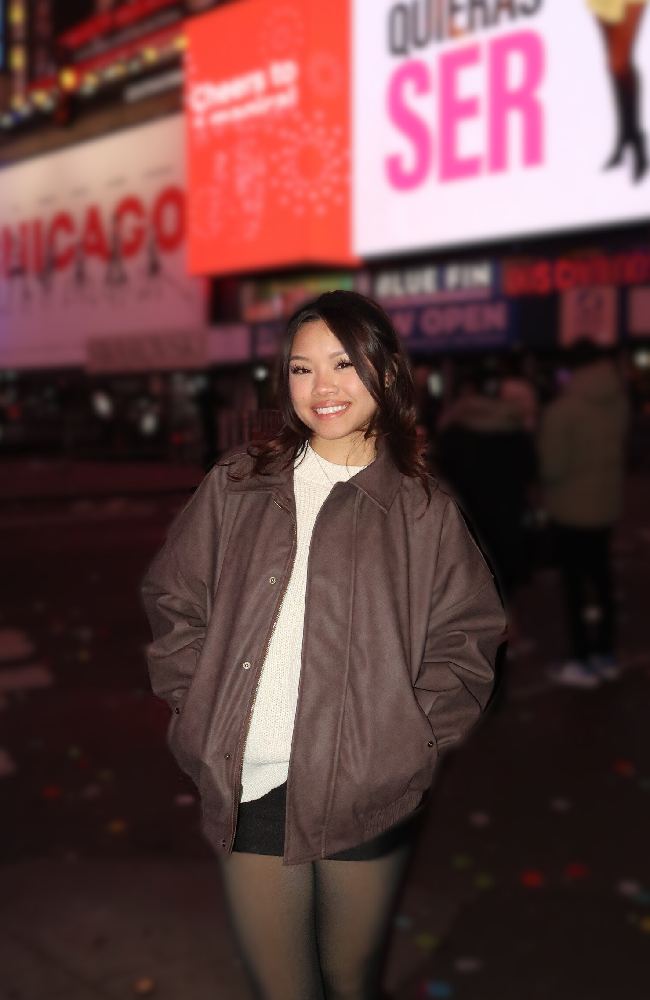

Welcome to Cougar Crave Café, a culinary gem at the University of Houston - Sugar Land,
founded by Kym Le, a UH alumna and culinary virtuoso with 15 years of experience.
With an early immersion and appreciation of the culinaary arts, Kym was able to open her first restaurant in 2013: "The Urban Kitchen" as well as her
latest project, the "Cougar Crave Café" a few years after.
Aside from managing her restaurants, Kym also finds passions within playing sports, traveling, and spending time with her friends and family.
Her commitment to high quality foods and experiences ensures that everyone will leave her restaurants satisfied and eager to return!
